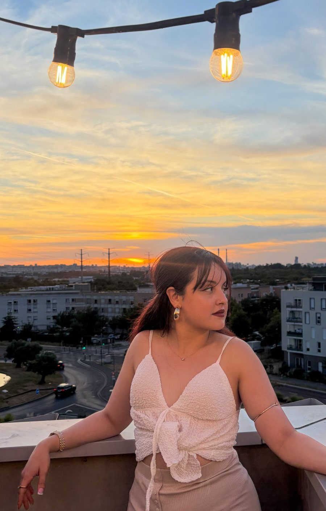
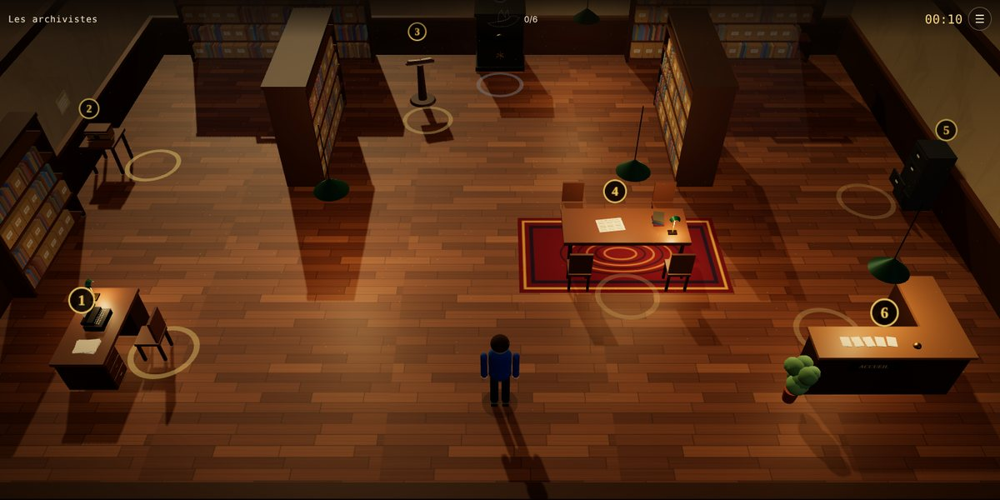
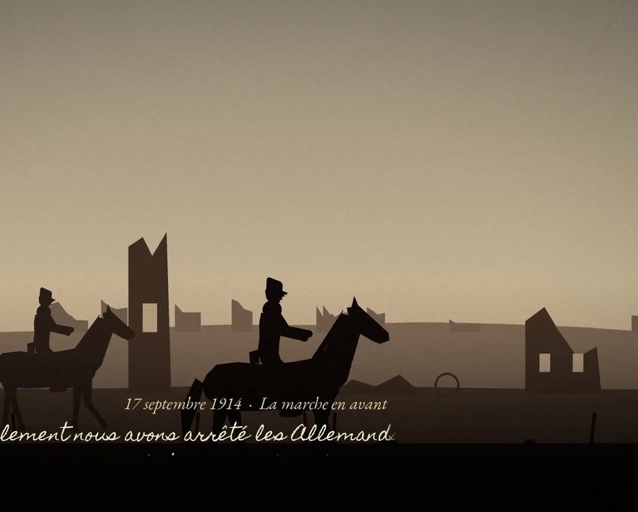

Communication · Histoire sociale · Féminisme
Raconter
ce qui
compte.
Je suis Anaïs, chargée de communication. Je transforme l'histoire, les droits et les luttes en jeux, en images et en récits qui se vivent.

Mes créations
Chaque projet raconte son histoire : le besoin, la création, puis le résultat.

01Escape game
La salle des archives
Un escape game pour découvrir l'histoire du syndicalisme chrétien en France.

02Vidéo animée
Lettres du front
Une correspondance de la Grande Guerre racontée en animation.
Jeu d'enquête
Les effacées
Une enquête pour retrouver les femmes oubliées des luttes sociales.
On retient mieux ce qu'on a vécu que ce qu'on a lu.
Ma façon de communiquer
Le journal
Coulisses de création, féminisme, histoire sociale : ce que je pense et ce que je fabrique.
À propos
Féministe, passionnée d'histoire sociale, et convaincue que la communication peut changer les choses.
Diplômée d'un master en communication des organisations, je travaille dans le monde syndical. À côté, je crée des jeux, des vidéos et des contenus qui rendent les droits, l'histoire et les luttes accessibles à toutes et à tous.